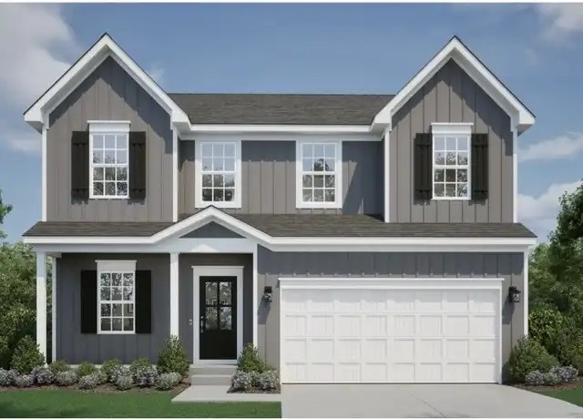

Monday, October 26, 2026
One new listing since Friday. Nothing on Friday's list changed price or status. Every home is still active at the same price. Drive times are in minutes to Woodbine (Cranberry), then Foxwood (Mars), then Broadway (Wexford). They assume no traffic, so rush hour will probably be 10-25% longer.

01. 7004 Jones Ln, Adams Twp (Amherst Village), Butler County - $599,990
New listing (MLS #1780738, listed about Oct 24). New construction, built 2026, "Somerset" model by New Home Star.
4 bed / 3 full + 1 half bath, 3,685 sq ft, 0.23 ac lot (62x145)
Full finished basement, attached 2-car garage, sunroom, open floor plan. HOA is $75 a month. Mars Area schools.
New and move-in ready, but about $50k over budget, the lot is small, and the garage is a standard 2-car.
Drive: 24 / 11 / 17. That's over 20 min to Woodbine but close to Foxwood and Broadway.
Photo is the builder's rendering from the listing.
I only searched Butler County ZIPs this time and skipped Allegheny County. New listings in Jackson, Evans City, Forward, Connoquenessing and Middlesex were left out because of long drives.
Prepared by your PA house search assistant
Photo is from the public Redfin listing.